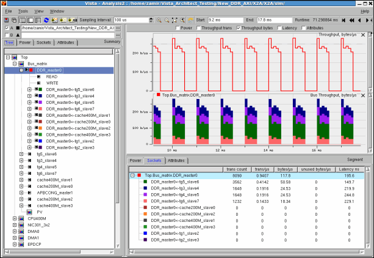
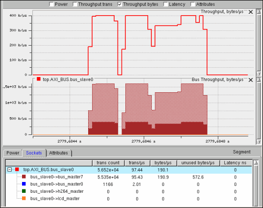

Viewing Bus Throughput Results
Upon selecting a bus master socket (or bus slave socket), and adding it to the graph (double clicking on it or selecting the “Add to Graph” option from the RMB popup menu), the “Bus Throughput” analysis view will open. Specific colors to all the slave sockets (or master sockets) that contribute to the bus master socket will automatically be set and colored areas (one on top of the other) will be shown. In addition, a regular throughput view of the selected socket will be displayed above its bus throughput view.
- The “Bus Throughput” will be selected only if the bus master socket is from a component of type “Bus” configured from a generic bus, residing under the “Generic Library”.
- A Color will fill the specific area of the contributing sockets (unlike the current line's specification).
- Double clicking a different socket in the browser will replace the current view with the new socket view.
- Dynamic view will list slaves under each master (or masters under each slave).
- The bus master (or slave) path and its color will be displayed at the top of the view.
- “Throughput Bytes” and “Throughput Trans” will operate as usual.
Figure 14‑10.
Bus Throughput Analysis View

- “The Dynamic View” will list the throughput socket contributors with values specified under each column. Note specifically the “unused bytes/us”.
- Unused Bytes — In case transaction data is less than the bus width, its amount is specified both in the graph (matrix fill style) and in the dynamic table below, under the “unused bytes/time” column.
Figure 14‑11.
Unused Bytes/Time
